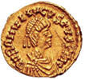
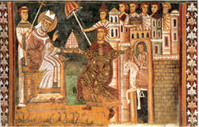
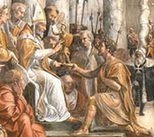
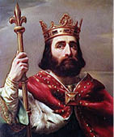
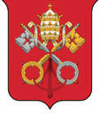

Sahte Vasiyetin Ortaya Çıkışı
8. yüzyılın ortalarında Doğu Roma İmparatoru Beşinci Konstantin, büyük bir komutan olmasına karşın, Hıristiyanlıkta tapınma objesi haline gelen resim, heykel ve ikonaları yasakladığı için ruhban sınıfı tarafından nefret ediliyor, Konstantinos Kopronymos (Boklu Konstantin) diye anılıyordu.
Boklu Konstantin, putkırıcı politikasını salt Doğu Kiliselerine uygulamakla kalmamış, imparator olarak hiç ilgilenmediği Batı eyaletleri ve Roma Patrikliğine de empoze etmeye kalkmıştı. Böylece İtalyanların “Papa” dediği Roma Patriğiyle birlikte, Papa’nın ruhani liderliğine bağlı tüm müminleri de karşısına aldı.
753 yılında, Batı Roma’nın başkenti Ravenna, Germen soyundan Lombardların eline geçti ve imparatorluk Kuzey İtalya’daki son kalesini kaybetti. Savunmasız kalan Kadim Roma, düşmana adeta terk edilmişti.
Papa Stefano, üst makamı Konstantinopolis’teki imparatorundan yardım istedi. Boklu Konstantin, ordu göndermek yerine Papa’yı kendi adına arabulucuk yapmakla görevlendirip, Lombardlarla anlaşma zemini aramayı tercih etti.
Güney İtalya hâlâ Doğu Roma’ya bağlı imparatorluk topraklarıydı ama kuzeyde düzenli aralıklarla Germenlerin saldırısı ve talanına maruz kalan halkıyla Batı Roma, uzun zamandır emperyal otorite boşluğu yaşıyordu.
Sonuncu imparatoru Romulus Augustus’un feragatinden beri başsız kalan Avrupa, kendilerini kral ilan eden çapulcuların iştahına terk edilmişti. Konstantinopolis çok uzaktı ve Hıristiyan âleminin en üst makamı Doğu Roma imparatorları, Batı Roma’yı savunamıyorlardı. Hıristiyanlığın “Beşli Hükümet”ini oluşturan meşru beş patrikhaneden Avrupa’yı temsil eden Roma’daki Papalık makamı da korumasız kalmıştı.

Flavius Romulus altın sikkesi
Hıristiyan Batı’ya Batılı bir imparator ve Roma Papalığını Konstantinopolis’ten bağımsız dinî liderlik makamı yapacak bir düzenlemeye ihtiyaç vardı.
Doğu Roma imparatorları, Büyük Konstantin’den bu yana Tanrı’nın doğrudan temsilcisi Pontifex Maximus olarak Hıristiyanlık âleminin reisi ve tüm patrikler gibi Roma’daki Papa’yı da atama, yargı ya da azil makamıydı.
Dolayısıyla Roma Patrikliği demek olan Papalığı, Konstantinopolis’teki imparatorun otoritesinden çıkaracak olan düzenleme, ancak ve yine imparator tarafından yapılabilirdi. Boklu Konstantin’in kendi otoritesini kendi eliyle ilgası beklenemeyeceğine göre...
Roma imparatorlarına kim Hıristiyanlık âleminin en üst makamı Pontifex Maximus ünvanını verdiyse onun geri alması gerekiyordu, Papalığı, Konstantinopolis’in otoritesine bağlayan hükmü... O da Hıristiyanlık âleminin tartışılmaz önderi, kurucu imparatoru Büyük Konstantin’den başkası olamazdı!
Boklu Konstantin’in arabulucu tayin ettiği Papa Stefano, işgalci Lombardlarla anlaşmaya çalışmaktansa, hem kendi makamını hem de Avrupa’yı Doğu Roma’nın hükümranlığından azat edecek bir çözüm peşine düştü.
Papa’nın danışmanları, dâhice çözümü bulmakta gecikmediler: Dört yüzyıl önce ölen Büyük Konstantin’in elinden sahte bir vasiyet yazacaklar ve Papa’yı Doğu’daki imparatorluğun vesayetinden azat edecek belge, sanki tarihin tozlu raflarında kaybolmuş da yeni bulunmuş gibi yapılacaktı.
Ama sahte belgeyi, bilinen bir referans yokluğunda, hiç olmazsa “inanılan” bir referansa dayandırmak gerekiyordu.

Büyük Konstantin, Papa Silvestro’ya vasiyetini verirken.
13. yüzyıl Dört Aziz Bazilikası, Roma
Danışmanların aklına, Büyük Konstantin’in hükümranlık zamanına denk gelen 314 ile 335 yılları arasında Papalık yapmış, ancak İmparator’un bizzat düzenlediği iki din kurultayına (314’te Arles Konsili ve 325’te Birinci Ekümenik İznik Konsili) bile katılmamış eski Roma Patriği Silvestro’ya atfedilen, tepeden tırnağa uyduruk bir efsane geldi. Bu efsaneye göre Papa Silvestro, Birleşik Roma İmparatoru Büyük Konstantin’i ölüm döşeğinde Hıristiyan olarak vaftiz eden kişiydi.
Papalık danışman ve hat ustaları, işte bu efsaneyi allayıp pullayıp Büyük Konstantin’in eliyle Kadim Roma’nın ilk Papa’sı Silvestro’ya teslim ettiği bir vasiyet biçiminde, sanki çok eskiden yazılmış gibi kaleme aldılar.
On sayfalık sahte belgenin tarihlendirilmesi, birinci bölümü 315, ikinci bölümü 317 yılında yazılmış gibi yapıldı.
Papa Stefano, 753 yılını 754’e bağlayan kara kışın ortasında Alp Dağları’nı aşıp Fransa’ya, Frank Kralı Kısa Pépin’in Ponthion’daki sarayına gitti. Niyeti, yepyeni bir ittifakla hem Konstantinopolis’teki imparator ve dinî vesayetinden kurtulmak hem de Papalık hükmünü güçlendirmekti.
Kendisini çok iyi karşılayan kral tarafından dört ay boyunca ağırlanan Papa Stefano, görüşmeler sırasında Kısa Pépin’e, tarihe Donatio Constantini (Büyük Konstantin’in Bağışı) olarak geçecek sahte belgeyi ilk kez gösterdi.
Sahte vasiyetinde, Büyük Konstantin’e epeyce cömertlik yaptırılmıştı.
Metinde yer alan, “Aziz resul efendilerim Petrus ve Pavlus’un selefi, Roma kentinin Ekümenik Patriği ve Babamız Aziz Silvestro’ya ve kendisinden sonra haleflerine ki onlar, dünyanın sonuna kadar Aziz Petrus’un tahtına oturacak olanlardır... Latran’daki emperyal sarayımızı, başımızda taşıdığımız hükümdar tacımızı bağışlıyor ve aynı zamanda Papalık tacını ve dahi lal gömlek ile kaftanı...Ve dahi emperyal yüceliğimizin işaretleriyle gücümüzün zaferini bırakıyoruz,”14 sözleriyle anlatılmak istenen, Büyük Konstantin’in koskoca Roma İmparatorluğu’nun batısını, hediye paketi gibi Papa’nın kucağına koymuşluğundan başka bir şey değildi.
Hıristiyanlığın kurucusu sayılan İmparator’un neden böyle bir çılgınlık yaptığı, durup dururken mülkünün yarısından niçin vazgeçtiği sorunsalı da Yeni Roma/ İstanbul’un sırtına yüklenmişti.
Büyük Konstantin, (sahte) vasiyeti güya Doğu’da yeni bir başkent kurup oturmak kararı aldığında yazdırmış ve arkada bıraktığı malı mülkü, “Terk ettiğimiz sarayımız ve Roma kenti ile tüm taşralarını ve dahi İtalya’nın kentleri ya da batı bölgelerinin tamamını, çok aziz yönder ve ekümenik Papa Silvestro’ya bırakıyoruz ve bu kesin hükmümüzle, saydığımız her şey ve her yerin onun ile seleflerinin iradesine, kutsal Roma Kilisesi’nin kanunlarına tabi olduğunu ilan ediyoruz,”* ifadesiyle Papalığa bağışlamıştı.
Yetmemiş, Hıristiyanlığın bir numaralı cihan lideri Büyük Konstantin, sahte vasiyetinde Pontifex Maximus sıfatıyla da Roma Kilisesi’nin başpatriği Papa’yı, “Emperyal hükmümüzle, dört başlıca kilise Antakya, İskenderiye, Konstantinopolis ve Kudüs’ün ve zaten Tanrı’nın dünyadaki tüm kiliselerinin öncüsü ilan ediyoruz,” demişti!

Konstantin’in Bağışı
Ressam: Gianfrancesco Penni, Konstantin Galerisi, Vatikan
Batı Roma Hıristiyan âlemini Papa Silvestro ile kendisinden sonra gelecek Papaların iradesine bırakmakla Avrupa kıtasının jeopolitik kaderini değiştirecek olan “çakma” vasiyet hükümleri; müminlerin hoşuna gidecek masallarla da süslüydü.
Bölümün başında söylemiştik: Sahte belgenin yazılımı, Papa Silvestro’nun Büyük Konstantin’i ölüm döşeğinde vaftiz ettiği efsanesine dayandırılmıştı. Üstüne bir de aynı Silvestro’nun, yine Büyük Konstantin’i cüzam hastalığından iyileştirdiği “mucize”si eklenmişti.
Gerçekten de Büyük Konstantin, Hıristiyanlığı kabul etmesine karşın vaftiz olmak için ölüm döşeğine düşmeyi beklemiş, böylece yaşarken işlediği günahların silinmesini sağlamayı amaçlamıştı.
Ne var ki Konstantin’in ölüm tarihi kayıtlara geçmiş, tam olarak biliniyordu: 22 Mayıs 337. Papa Silvestro’nunki de belliydi: 31 Aralık 335!
Büyük Konstantin, kendisini ölüm döşeğinde vaftiz eden Papa öldüğünde hâlâ hayattaydı. Üstüne iki yıl daha yaşamıştı.
Sadece bu hata bile, Papa Stefano’nun İmparator’un ölümünden 417 yıl sonra bulunmuş gibi çıkarıp “Konstantin’in Bağışı” diye gösterdiği belgenin sahteliğini kanıtlamaya yeterliydi. Tabii belgeyi ilk gören Frank Kralı Kısa Pépin ve dahi yakın çevresi okuma yazma bilmiş olsaydı!
Zaten zurnanın zırt dediği yer ve çakma vasiyetin onca yıl “otantik” diye yutturulabilmesinin iki nedeninden birincisi tam da buydu.
Tarihin ilk binyılında, eğitim sıkı sıkıya Kilise’ye bağlı, okuryazarlık, tamamen ruhban sınıfının tekelinde, o da öğrenmesine izin verilen papazlar tarafından icra edilebilen bir uğraşıydı.
Uğraşıydı diyorum; çünkü matbaanın icadına daha çok vardı ve kitaplar elle yazılıyor, kopistler tarafından çoğaltılıyordu. Ruhban sınıfı dışında okuryazar, parmakla gösterilecek kadar azdı. Din adamı olmayan egemenlerin ezici çoğunluğu, hatta kimi krallar bile okuma yazma bilmiyor, yanlarından eksik etmedikleri ruhban ve zaten saray erkânı papazlar, hem okutmanlık hem de kâtiplik yapıyorlardı.
Böylece tarihten coğrafyaya, gökbilimden tıbba, her bilim dalı Kilise’nin kontrolü altında ve muazzam bir bilgi birikimi içeren Hıristiyanlık öncesi pagan düşünürlerin, bilginlerin bıraktığı yazılı kayıtlar, Hıristiyan olmadıkları gerekçesiyle yasaktı.
Bilgiye erişimi özenle engellenen cahil halk her türlü hurafeye kolayca inandırılıyor, yazıya erişilmez bir kutsallık yüklüyor ve Kilise’nin yasakladığı pagan ama doğru bilgileri yayanlar, aforoz ediliyorlardı.
O tarihlerde dinsizlik bir suç (Hoş çağımızda da suç ilan edilmesine çeyrek var!) ve toplumdan dışlanmak anlamında aforoz, cüzamdan beter bir cezaydı. Zaten bir zaman sonra bununla da yetinilmeyecek, hastaları kadim bilgiler doğrultusunda şifalı otlarla tedaviye çalışan ebe kadınlar başta, Kilise’nin resmî bilgisini tartışmaya açan herkes cadı, büyücü, şeytanla işbirliği yaptı diye Engizisyon işkencelerinden geçirilecek, meydanlarda yakılacaktı.
Ne var ki yiğidi öldür, hakkını yeme: Batı Avrupa’daki belli başlı kiliselerin çoğu, pagan dönemden kalan yazılı bilgiyi bazen ruhban sınıfından bile sakladı, ama yok etmedi.
İleriki çağlarda modern bilimler, tam da kiliselerin yok etmediği bu kadim bilgiler, antik dönem bilginlerinin ampirist bulguları üzerine inşa edilecekti.
Ama 754 yılında, Kilise’nin bilgi üzerindeki tekelini kıracak matbaanın icadına daha yedi yüzyıl vardı. Antik Yunan, Mısır ve Roma uygarlıklarının yeniden keşfedilmesiyle başlayacak Rönesans’a da bir o kadar.
Papa Stefano’nun sahte Konstantin vasiyetini Kısa Pépin’e göstermeden önce okuma yazma bilen Frank Başpapazı Fulrad’ı bir biçimde ikna ettiğini tahmin, zor olmasa gerek.
Gerçi Frank Kralı’nı belgenin gerçekliğine inandırmak için çok daha geçerli bir gerekçesi vardı: Papa Stefano, İtalya’yı Lombard istilasından kurtarması ve Papalığın egemenliğine vermesi karşılığında Kısa Pépin’e “Batı Roma İmparatoru” ünvanını önerdi.
Barbar istilalarıyla tahtların devrildiği Avrupa’da hanedanlar kırıma uğramış, basit savaş senyörleri krallıklarını ilan ederken aralarından birisini “imparator” ünvanıyla donatacak meşru bir makam da kalmamıştı.
6 Ocak 754’te Ponthion’daki sarayda buluşan Papa Stefano ile Kral Kısa Pépin, karşılıklı bir meşruiyet pazarlığında anlaştılar.
14 Nisan 754’te Kısa Pépin, fethedeceği İtalya topraklarından feragat sözü ve Papalara bu topraklarda devlet kurma yetkisini veren Quierzy Anlaşması’nı imzaladı. Söz konusu anlaşma, salt Lombardlardan geri alınacak bölgeleri kapsamıyordu. Güney İtalya’da “Pentapol” diye anılan beş ilin egemenliğini de Konstantinopolis’teki Roma İmparatoru’ndan koparıp, Papa’nın hükümranlığına bağlıyordu. Doğu Roma İmparatorluğu’nun İtalya’daki mülkünü savaşta değil, “masa”da yitirdiği bu anlaşma, tarihe “Pépin’in Bağışı” olarak geçecekti.
27 Temmuz 754’te Papa Stefano, sarayında hâlâ konuğu olduğu Kısa Pépin’e imparator tacını Kutsal Yaratıcı adına, Roma Kilisesi’nin kurucu Resulleri Aziz Petrus ve Pavlus’un aracısı sıfatıyla, kendi eliyle giydirdi. Onunla birlikte iki oğlu Karolus (gelecekteki Şarlman) ile Karloman’ı da kutsayarak soyunu, Karolenj Hanedanı olarak sürdürme meşruiyetini tanıdı. Kralı imparator, oğullarını da kral ilan ettikten sonra hanedanlarına “Romalıların Korucuları” ünvanını verdi.
Karşılığında, İtalya’ya Frank ordularıyla geri döndü.
Kısa Pépin, 755’ten öteye Lombardlardan geri aldığı İtalya topraklarını söz verdiği gibi Papa’ya bağışladı.
Frank “İmparator” Kısa Pépin’in bağışladığı toprakları Papa adına teslim almak görevi, Frank Başpapazı Fulrad’a verilmişti. Fulrad, düşmandan geri alınan ve Konstantinopolis’teki İmparator’dan gasp edilen kentlerin anahtarlarını Aziz Petrus’un mezarının üstüne koya-

Frank Kralı Kısa Pépin
rak, mülkiyetlerini Hıristiyan Roma’nın kurucu resulüne devretmiş oldu. Böylece “Papalık Devletleri” diye anılacak kurum doğuyor ve İtalya, Resul Petrus’un selefleri Papaların egemenliğine giriyordu.
Papa Stefano, zaman yitirmeden, biri mülkünü yönetecek ve öteki Hıristiyan ruhbana kendi adına öncülük edecek iki temsilci seçti.
Eski Papalık başkenti Ravenna’nın Doğu Roma İmparatoru’na sadık kalan Başpatriği Sergius, bu uyduruk egemenliğe itiraz edecek oldu. Tutuklandı.
Yoktan iktidar yaratan sahte vasiyet belgesine dönecek olursak, bilmem ilk Roma Papa’sı Silvestro’ya atfedilen sayısız mucizeden Büyük Konstantin’i cüzamdan iyileştirdiği başarısına dönmeye gerek var mı?
Büyük Konstantin, bizzat düzenlediği iki din kurultayında bile bulunmayan Papa Silvestro eliyle vaftiz olmadığı gibi, zamanı için çok uzun sayılan 65 yıllık ömründe de cüzama yakalanmamıştı.
Ne var ki efsaneler, çoğu kez gerçeklerden daha büyüleyici ve bilgiden çok daha kolay ulaşılır; inanç dünyasında sürdükleri ömür, gerçek tarihlerden bile uzun oluyor.
Pek çok edebiyat eseri, Papa Silvestro’nun mucizelerinden söz eder, Dante’nin İlahi Komedya’sının ilk bölümü “Cehennem”in bir kantosunda bile, “Büyük Konstantin’i cüzamdan iyi eden Silvestro” diye anılır. Kendisini, İmparator’u vaftiz ederken, cüzamını geçirirken ya da elinden sahte vasiyeti teslim alırken gösteren sayısız tasvir vardır. Dünyanın dört bir yanında hâlâ resmedilmekte, hâlâ kutsanmaktadır.
Tarihçi Bernard Vannier’nin deyişiyle, “kayda değer hiçbir şey yapmadan kayıtlara geçen” Papa Silvestro’nun tek gerçek başarısı, bir 31 Aralık gecesi ölmekti. Hıristiyanlık yolunda şehit olmadan azizlik mertebesine yükseltilen Silvestro’nun adı, yılbaşıyla özdeşleşmiştir. 31 Aralık gecesi, Aziz Silvestro bayramı olarak kutlanır.

Vatikan’ın arması/Doğu Roma’dan gasp edilen illeri simgeleyen
anahtarlar, günümüzde Aziz Petrus’un emaneti, göksel ve
yersel iktidar anahtarları diye tanıtılır.
14 Günümüz dilinde anlaşılır çevirisini özetlediğimiz Latince metnin aslı, Lorenzo Valla’nın ayrıntılı araştırması kapsamında, sahteliğin kanıtlandığı sayfalarda yer alıyor.